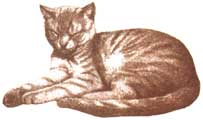

COUNTRY LORE
Tips that will help you get through th ewinter season.
Last winter, the bare path between our porch and gate became slippery from the packed snow. We sprinkled grass seed over the icy areas, which provided traction (and attracted birds as well). It did not harm the existing grass, as salt can, and when spring came, we were treated to a soft, green path where the bare dirt used to be.
-John and April Adkins
Charleston, West Virginia
For years I struggled with scraping the ice off my windshield during the winter. Last winter, I finally found the perfect solution: I purchased four pieces of scrap Plexiglas (approximately 10" x 24") from the local hardware store for about three dollars. I simply slip the Plexiglas on my windshield, and then pick them off in the morning for a perfectly clear windshield. -Cecil Monk
Bangor, Michigan
Most of us drive around with a car jack stowed in the trunk. In the event of a flat tire, it's indispensable. But a car jack has plenty of other useful applications too.
When I first moved to Vermont, I wanted to remove three large stumps from my backyard. As I tried to dig and chop roots in the rocky soil, I realized why the previous owner had left the stumps. About two-thirds of the way around the first stump, I encountered a large root that ran straight out from the stump, just below the surface. It looked like a wonderful lever to pry the thing out of the ground.
About seven feet from the stump, I dug under the root and cut through it. Then I cleared enough space out to slide my jack under the root. As I cranked the jack up, I heard popping noises as the old stump started to rise. When the jack reached full extension, I slid a cinder block under the root to hold it up. Then I lowered the jack and repositioned it. The second time, the stump came free, and I was convinced I was on to something.
The next two stumps proved to be more formidable. I replaced my scissors-type car jack with a 10-ton hydraulic jack. I was amazed that I could lift the roots right out of the ground, considering the huge size of them. Since then, I have used my hydraulic jack for many applications. Often a scissors jack works just as well, but I am reluctant to take it out of the trunk in case I forget to replace it and then have a blow out.
Recently I ran into a stubborn drainpipe connection under the kitchen sink. I sprayed it with bolt loosener and took a large pipe wrench to it, but it was in tight quarters and I couldn't exert much force on the wrench. There was enough room to slide my jack under the handle of the pipe wrench, and slowly crank it up. The connection broke loose with very little exertion on my part, and saved me the price of calling in a plumber.
-Mrs. C. Pruitt
Elkland, Missouri
Last year, I used my wood stove all winter long. When it came to cleaning it out after the last fire of the season, I poured in about an inch of kitty litter. This absorbs the musty odor throughout our humid summer, and is easy to clean out once winter rolls around.
-Janet Cunningham
Southern Pines, N. Carolina
Recently I broke a glass bottle filled with cooking oil on my kitchen floor. Of course, I was far more worried about the shards of glass then the big mess, but I came up with a simple idea solution. I sprinkled a little flour on the area, waited a few minutes, and then removed the oil and glass dough. It even cleaned the cracks between the tiles.
-David Blake
Alexandria, Indiana
To fertilize house plants, save four eggshells, crush them, and put them in a sealable jar with water. Let the shells sit for three days, and then water your house plants with them, so that just the top of the soil is wet. Water normally the next day. This mixture works well on outdoor plants also.
-Cynthia Haymon
Greenweal Springs, Louisiana
When I want to add eggshells to my compost, I rinse the empty shells and let them dry in a mesh onion bag. When the bag is full, I put it inside a paper bag and crush all the shells. (Small kids love this process!) The bits of shell can easily be mixed into your compost pile.
-Elimore Davis
St. Maries, Idaho
Editor's note: MOTHER'S Country Lore section is a great chance for you to share practical, down-home solutions to life's frustrating problems. Write us and send photos c% "Lore," Mother Earth News, P. O. Box 129, Arden, NC28704--and please include your phone number. To show our appreciation, we will send totebags to everyone whose suggestions we print.
|
 |
|
|